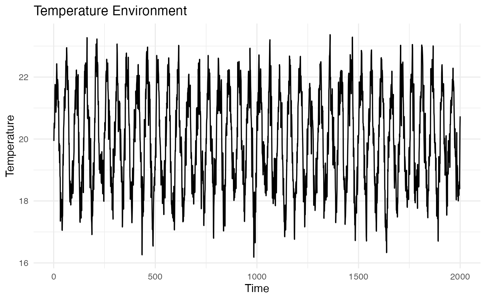
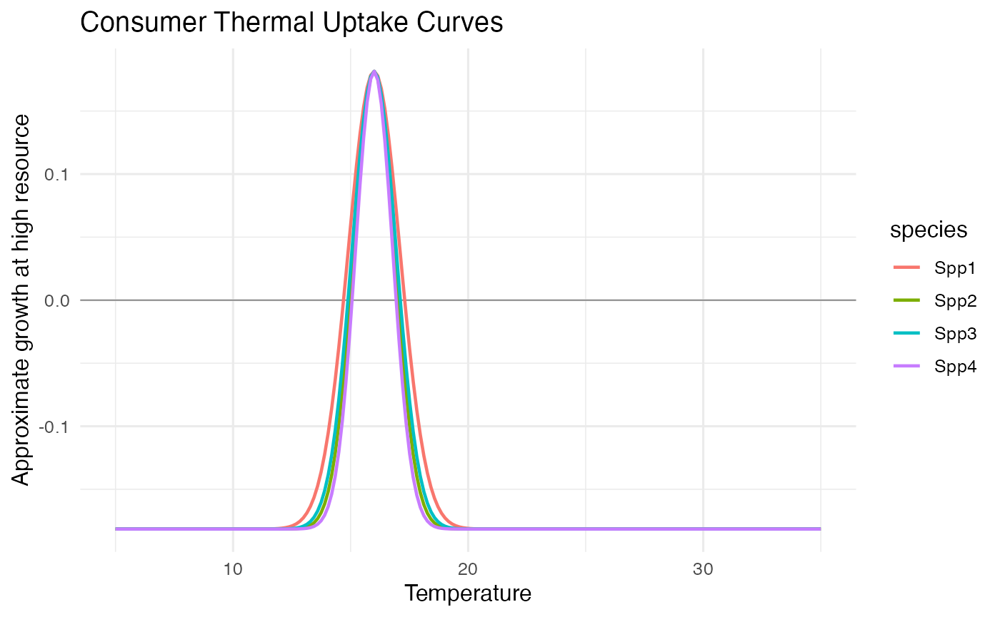
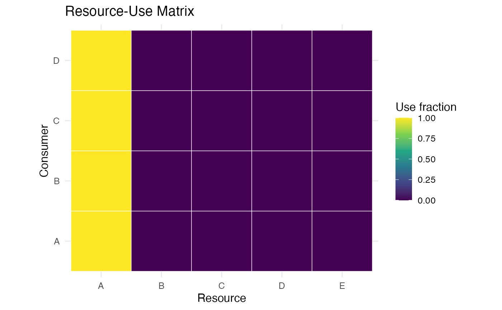
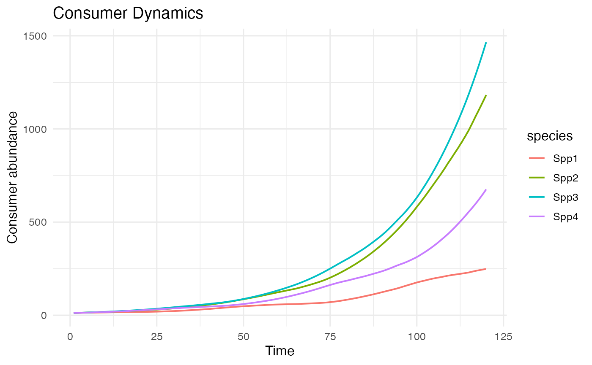
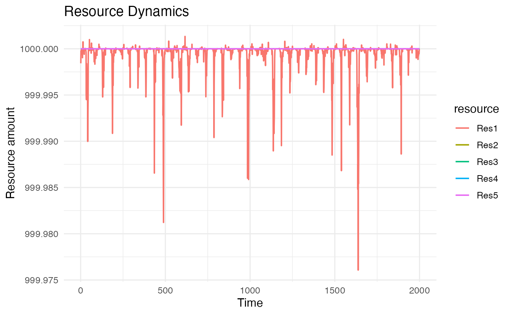
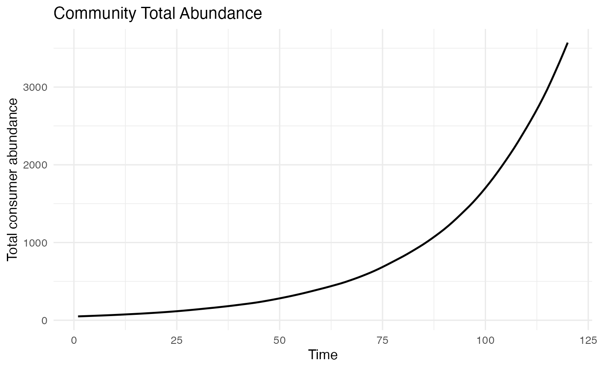

Single-Community Walkthrough: Consumer-Resource
Source:vignettes/consumer_resource_single_community.Rmd
consumer_resource_single_community.RmdPurpose
This walkthrough defines one consumer-resource community, exposes it to one temperature time series, runs the continuous-time consumer-resource simulator, and makes a few basic plots.
Set up R
library(dplyr)
library(ggplot2)
library(tidyr)
library(community.simulator)
theme_set(theme_minimal(base_size = 12))Define One Environment
set.seed(3)
duration <- 120
time <- seq_len(duration)
temperature <- 20 +
2 * sin(2 * pi * time / 50) +
stats::arima.sim(model = list(ar = 0.6), n = duration, sd = 0.5)
environment <- tibble(
time = time,
temperature = as.numeric(temperature)
)
ggplot(environment, aes(x = time, y = temperature)) +
geom_line(linewidth = 0.6) +
labs(x = "Time", y = "Temperature", title = "Temperature Environment")
Define One Community
community <- build_CR_community(
S = 4,
uptake_maximum_mean = 0.08,
uptake_maximum_range = 0.00,
uptake_maximum_distribution = "regular",
uptake_optimum_mean = 20,
uptake_optimum_range = 7,
uptake_optimum_distribution = "regular",
uptake_width_mean = 6,
uptake_width_range = 1.5,
uptake_width_distribution = "regular",
half_saturation_mean = 80,
half_saturation_range = 10,
half_saturation_distribution = "regular",
consumer_death_rate = 0.03,
resource_renewal_rate = 1,
resource_supply = 800,
conversion_efficiency = 1,
resource_use_mode = "shared_to_private",
active_resource = 1,
private_resource_use_distribution = "beta",
private_resource_use_mean = 0.7,
private_resource_use_precision = 18,
community_seed = 13
)Consumer traits
consumer_traits <- tibble(
species = paste0("Spp", seq_len(community$S)),
max_uptake = community$uptake_maximum_i,
uptake_optimum = community$uptake_optimum_i,
uptake_width = community$uptake_width_i,
death_rate = community$d_i,
private_resource_fraction = community$private_resource_use_i,
shared_resource_fraction = 1 - community$private_resource_use_i
)
consumer_traits
#> # A tibble: 4 × 7
#> species max_uptake uptake_optimum uptake_width death_rate
#> <chr> <dbl> <dbl> <dbl> <dbl>
#> 1 Spp1 0.08 16.5 5.25 0.03
#> 2 Spp2 0.08 18.8 5.75 0.03
#> 3 Spp3 0.08 21.2 6.25 0.03
#> 4 Spp4 0.08 23.5 6.75 0.03
#> # ℹ 2 more variables: private_resource_fraction <dbl>,
#> # shared_resource_fraction <dbl>Temperature uptake curves
temperature_grid <- tibble(temperature = seq(5, 35, length.out = 200))
uptake_curves <- tidyr::crossing(
consumer_traits,
temperature_grid
) |>
mutate(
uptake_capacity = max_uptake *
exp(-0.5 * ((temperature - uptake_optimum) / uptake_width)^2),
expected_growth_at_high_resource = uptake_capacity - death_rate
)
ggplot(uptake_curves, aes(x = temperature, y = expected_growth_at_high_resource, colour = species)) +
geom_hline(yintercept = 0, linewidth = 0.3, colour = "grey50") +
geom_line(linewidth = 0.8) +
labs(
x = "Temperature",
y = "Approximate growth at high resource",
title = "Consumer Thermal Uptake Curves"
)
Resource-use matrix
resource_use <- as.data.frame(as.table(community$resource_use_ij)) |>
rename(consumer = Var1, resource = Var2, use_fraction = Freq)
ggplot(resource_use, aes(x = resource, y = consumer, fill = use_fraction)) +
geom_tile(colour = "white") +
scale_fill_viridis_c(limits = c(0, 1)) +
coord_equal() +
labs(
x = "Resource",
y = "Consumer",
fill = "Use fraction",
title = "Resource-Use Matrix"
)
Run Dynamics
initial_consumer_abundances <- rep(12, community$S)
initial_resource_values <- rep(600, community$R)
simulation <- simulator_consumer_resource_continuous(
input_com_params = community,
TcelSeries = matrix(environment$temperature, nrow = 1),
initial_consumer_abundances = initial_consumer_abundances,
initial_resource_values = initial_resource_values,
times = environment$time,
output_times = environment$time,
temperature_interpolation = "linear",
consumer_immigration_rate = 0.01,
ode_method = "lsoda",
rtol = 1e-6,
atol = 1e-8,
max_step = 1
)
consumers <- simulation$consumers |>
mutate(time = environment$time) |>
pivot_longer(
cols = starts_with("Spp"),
names_to = "species",
values_to = "abundance"
)
resources <- simulation$resources |>
mutate(time = environment$time) |>
pivot_longer(
cols = starts_with("Res"),
names_to = "resource",
values_to = "amount"
)Plot Dynamics
total_abundance <- consumers |>
group_by(time) |>
summarise(total_abundance = sum(abundance), .groups = "drop")
ggplot(consumers, aes(x = time, y = abundance, colour = species)) +
geom_line(linewidth = 0.7) +
labs(x = "Time", y = "Consumer abundance", title = "Consumer Dynamics")
ggplot(resources, aes(x = time, y = amount, colour = resource)) +
geom_line(linewidth = 0.7) +
labs(x = "Time", y = "Resource amount", title = "Resource Dynamics")
ggplot(total_abundance, aes(x = time, y = total_abundance)) +
geom_line(linewidth = 0.8) +
labs(x = "Time", y = "Total consumer abundance", title = "Community Total Abundance")
Interactive Shiny Version
You can explore the same kind of one-community setup interactively with the Shiny simulation explorer:
In the app, choose Consumer-resource, press Build community to inspect the resource-use matrix, uptake curves, and binary viability-based community performance curve, and press Simulate only when you want to run the ODE dynamics. The app has both a simple specification mode and a detailed mode for expanding the CR resource-use and resource-supply parameters.